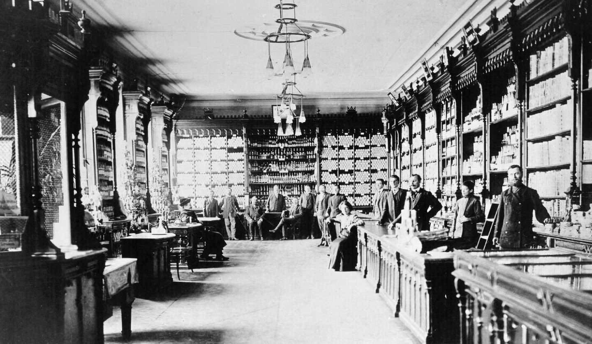

История здания
Династия Суховых

Династия Суховых: история меценатства и предпринимательства
В конце XIX — начале XX веков семейство купцов Рода Суховых вошло в историю Барнаула как крупные предприниматели, владельцы недвижимости и меценаты.
История династии купцов и меценатов, Суховых, прослеживается с конца XIX века до 1917 года. Судя по историческим данным, они относились к коренным барнаульцам, а если и прибыли с других территорий, то до 50-х годов позапрошлого века.
В 60–80-е гг. XIX в. главой семьи являлся Никифор Трофимович Сухов, купец первой гильдии. Его сыновья продолжили род Суховых и преумножили, то что создал их отец. Особую активность в коммерческих и общественных делах проявили Дмитрий Никифорович и его сыновья Василий, Павел и Прокопий. Именно в 80–90 гг. XIX в., когда дело возглавил Дмитрий Никифорович, Суховы становятся крупнейшими предпринимателями Барнаула.
В конце XIX — начале XX веков семейство купцов Рода Суховых вошло в историю Барнаула как крупные предприниматели, владельцы недвижимости и меценаты.
История династии купцов и меценатов, Суховых, прослеживается с конца XIX века до 1917 года. Судя по историческим данным, они относились к коренным барнаульцам, а если и прибыли с других территорий, то до 50-х годов позапрошлого века.
В 60–80-е гг. XIX в. главой семьи являлся Никифор Трофимович Сухов, купец первой гильдии. Его сыновья продолжили род Суховых и преумножили, то что создал их отец. Особую активность в коммерческих и общественных делах проявили Дмитрий Никифорович и его сыновья Василий, Павел и Прокопий. Именно в 80–90 гг. XIX в., когда дело возглавил Дмитрий Никифорович, Суховы становятся крупнейшими предпринимателями Барнаула.
Род был на редкость многочисленным. В 1910 году четыре семьи насчитывали 32 человека. Они занимались кирпичным, кожевенным, свечным производством.
Именно в домах Суховых впервые в Барнауле зажегся электрический свет. Купцы открывали собственные магазины и продавали текстиль, обувь петербургских, московских и варшавских фабрик, сельскохозяйственные орудия российских, американских и немецких фирм, мебель, швейные машинки и музыкальные инструменты, чай, сахар, вина и табак, краски, кожевенные изделия по всему краю.
Когда в 1882 году на пост барнаульского городского головы был избран один из самых богатых в городе людей — купец Дмитрий Сухов — жители Барнаула ёрничали — мол, прибавит теперь Дмитрий Никифорович к своим миллионам казённое жалованье. И ведь, между прочим, не маленькое! Не зря, пожалуй, говорится — деньги к деньгам льнут...
Однако в день своего вступления в должность городской голова посрамил шутников: Дмитрий Никифорович официально заявил, что своё жалованье — всё до копейки — намерен употребить не на собственные, а на общественные нужды!
Именно в домах Суховых впервые в Барнауле зажегся электрический свет. Купцы открывали собственные магазины и продавали текстиль, обувь петербургских, московских и варшавских фабрик, сельскохозяйственные орудия российских, американских и немецких фирм, мебель, швейные машинки и музыкальные инструменты, чай, сахар, вина и табак, краски, кожевенные изделия по всему краю.
Когда в 1882 году на пост барнаульского городского головы был избран один из самых богатых в городе людей — купец Дмитрий Сухов — жители Барнаула ёрничали — мол, прибавит теперь Дмитрий Никифорович к своим миллионам казённое жалованье. И ведь, между прочим, не маленькое! Не зря, пожалуй, говорится — деньги к деньгам льнут...
Однако в день своего вступления в должность городской голова посрамил шутников: Дмитрий Никифорович официально заявил, что своё жалованье — всё до копейки — намерен употребить не на собственные, а на общественные нужды!
Сделать в Барнауле требовалось многое, а на небогатые средства из городской казны — в этом новый голова быстро убедился — особенно рассчитывать не приходилось. С привлечением личных средств Дмитрий Сухов надеялся на более скорое решение самых насущных вопросов.
Таковыми для Барнаула к тому моменту оказались открытие гимназии и устройство нового кладбища. Разговоры о них велись уже довольно давно, а вот до дела у предыдущих градоначальников всё как-то не доходило. Дмитрий Никифорович не стал дожидаться финансирования из губернской казны. Он согласовал все необходимые документы и сразу же приступил к работе, вложив в дело личные средства. За три года, в течение которых Дмитрий Сухов возглавлял Барнаул, он таким образом успел завершить устройство гимназии и нового кладбища.
После смерти Дмитрия Никифоровича его сыновья — Василий и Прокопий — продолжили дело отца. Родителя они уважали и старались во всём следовать его примеру. Помня о том, как много сил и средств употреблял их родитель ради помощи людям, они взяли за правило и в этом от него не отставать.
Таковыми для Барнаула к тому моменту оказались открытие гимназии и устройство нового кладбища. Разговоры о них велись уже довольно давно, а вот до дела у предыдущих градоначальников всё как-то не доходило. Дмитрий Никифорович не стал дожидаться финансирования из губернской казны. Он согласовал все необходимые документы и сразу же приступил к работе, вложив в дело личные средства. За три года, в течение которых Дмитрий Сухов возглавлял Барнаул, он таким образом успел завершить устройство гимназии и нового кладбища.
После смерти Дмитрия Никифоровича его сыновья — Василий и Прокопий — продолжили дело отца. Родителя они уважали и старались во всём следовать его примеру. Помня о том, как много сил и средств употреблял их родитель ради помощи людям, они взяли за правило и в этом от него не отставать.
Вступив во владение отцовскими предприятиями, огромную долю прибыли Василий и Прокопий Суховы передавали на благотворительные цели. В 1895 году братья пожертвовали 10 тысяч рублей на строительство здания для Николаевского училища и содержали учебное заведение за собственный счёт.
Особенно отличился в делах благотворительности Василий Дмитриевич Сухов. Когда в 1907 году в Барнауле открылось Торговое училище, он обеспечил обучение и содержание беднейших его учащихся. Все необходимы пособия, учебники и прочее оборудование также было приобретено им на личные средства.
Для строительства в Барнауле здания Нагорной школы в 1885 году Василий Сухов пожертвовал строительные материалы и 400 рублей на приобретение книг в школьную библиотеку. Он постоянно заботился о неимущих учениках школы: безвозмездно предоставлял им ткань на пошив ученического платья, оплачивал обеды в школьной столовой, наиболее одарённым назначал стипендии.
Василий Дмитриевич был постоянным членом барнаульского «Общества попечения о начальном образовании», на нужды которого пожертвовал в общей сложности 5 тысяч рублей.
Особенно отличился в делах благотворительности Василий Дмитриевич Сухов. Когда в 1907 году в Барнауле открылось Торговое училище, он обеспечил обучение и содержание беднейших его учащихся. Все необходимы пособия, учебники и прочее оборудование также было приобретено им на личные средства.
Для строительства в Барнауле здания Нагорной школы в 1885 году Василий Сухов пожертвовал строительные материалы и 400 рублей на приобретение книг в школьную библиотеку. Он постоянно заботился о неимущих учениках школы: безвозмездно предоставлял им ткань на пошив ученического платья, оплачивал обеды в школьной столовой, наиболее одарённым назначал стипендии.
Василий Дмитриевич был постоянным членом барнаульского «Общества попечения о начальном образовании», на нужды которого пожертвовал в общей сложности 5 тысяч рублей.
Вступив в 1902 году в должность городского головы Барнаула, Василий Дмитриевич, вслед за отцом, передал своё жалованье на общественные нужды. На эти средства, в частности, была открыта городская больница. 1902-й год выдался неурожайным, и Сухов сверх жалованья выделил из личных денег три тысячи рублей на закупку зерна для нуждающихся горожан.
За свою широкую благотворительную деятельность Василий Дмитриевич Сухов в 1909 году удостоился звания Почётного гражданина Барнаула. И его, и Дмитрия Никифоровича Сухова по сей день считают одними из лучших градоначальников за всю историю города.
Барнаульской 1-й гильдии купец Павел Дмитриевич Сухов на основании Высочайшего повеления последовавшего в 2 день февраля 1913 года представлено право ношения на груди Высочайшей учрежденной в память 300-летия Царствования Дома Романовых светлой бронзовой медали.
За свою широкую благотворительную деятельность Василий Дмитриевич Сухов в 1909 году удостоился звания Почётного гражданина Барнаула. И его, и Дмитрия Никифоровича Сухова по сей день считают одними из лучших градоначальников за всю историю города.
Барнаульской 1-й гильдии купец Павел Дмитриевич Сухов на основании Высочайшего повеления последовавшего в 2 день февраля 1913 года представлено право ношения на груди Высочайшей учрежденной в память 300-летия Царствования Дома Романовых светлой бронзовой медали.
Магазин Сухова

Улица Льва Толстого – одна из немногих в Барнауле, где история сохранилась практически в первоначальном виде. Усадьба барнаульских купцов 1й гильдии Суховых занимала целый квартал по ул. Большая Тобольская (с 1910 г. - ул. Л. Толстого), Базарной (Соборной) площади (современный проспект Социалистический) и ул. Мало Тобольской.
Одним из первых было построено здание магазина в период между 1856 и 1864 годами по адресу: Льва Толстого 31. До революции оно принадлежало Сухову Д.Н. - Торговый Дом «Д.Н. Сухова сыновья». Здесь был магазин, торговавший мануфактурными товарами, готовым платьем, чаем и сахаром, здесь же проводили скупку сельхозпродукции.
После революции 1917 года здание было национализировано. В разные периоды времени в нём располагались: контора и магазин Центрального рабочего кооператива, оптовый магазин Алтайского союза потребительских обществ, 65-я отдельная конвойная рота, 1-е отделение милиции и барнаульский городской административный отдел, торговая база Алтайторга, кинотеатр «Октябрь».
28 декабря 1994 года здание было признано памятником культурного наследия регионального значения под названием «Магазин Сухова».
Сейчас это историческое здание реконструировано в ресторан в купеческом стиле с русской кухней «ЛЮРАССА».
Одним из первых было построено здание магазина в период между 1856 и 1864 годами по адресу: Льва Толстого 31. До революции оно принадлежало Сухову Д.Н. - Торговый Дом «Д.Н. Сухова сыновья». Здесь был магазин, торговавший мануфактурными товарами, готовым платьем, чаем и сахаром, здесь же проводили скупку сельхозпродукции.
После революции 1917 года здание было национализировано. В разные периоды времени в нём располагались: контора и магазин Центрального рабочего кооператива, оптовый магазин Алтайского союза потребительских обществ, 65-я отдельная конвойная рота, 1-е отделение милиции и барнаульский городской административный отдел, торговая база Алтайторга, кинотеатр «Октябрь».
28 декабря 1994 года здание было признано памятником культурного наследия регионального значения под названием «Магазин Сухова».
Сейчас это историческое здание реконструировано в ресторан в купеческом стиле с русской кухней «ЛЮРАССА».
История в монетах: находки из купеческого дома Суховых
В ходе реставрации нашего исторического здания, бывшего купеческого магазина Суховых XIX века, мы обнаружили настоящую нумизматическую сокровищницу!
Среди находок – десятки медных монет Российской империи XVIII-XIX веков, которые когда-то переходили из рук в руки в торговых лавках купцов. Особый интерес представляют:
Сегодня эти находки – не просто экспонаты, а живые свидетельства истории, которые мы бережно сохраняем.
Все монеты прошли экспертизу подлинности и теперь представлены в музее нашего ресторана.
Среди находок – десятки медных монет Российской империи XVIII-XIX веков, которые когда-то переходили из рук в руки в торговых лавках купцов. Особый интерес представляют:
- Полушки и денги екатерининской эпохи
- 1-2-копеечные серебряные монеты с вензелями российских императоров
- Медные "сибирские" монеты 1760-х годов
Сегодня эти находки – не просто экспонаты, а живые свидетельства истории, которые мы бережно сохраняем.
Все монеты прошли экспертизу подлинности и теперь представлены в музее нашего ресторана.
Находки из прошлого
Во время реставрации нашего здания мы совершили удивительные открытия! Под слоями штукатурки и старыми полами скрывались настоящие сокровища XIX – начала XX века, бережно сохранённые временем.
Среди находок – изящные стеклянные флаконы из-под духов и аптечных мазей, винные бутылки с клеймами барнаульских купцов, а также ключи от давно несуществующих замков, пуговицы от парадных мундиров и даже фрагменты украшений – свидетели былой роскоши.
Каждый предмет – это история. Аптечные пузырьки рассказывают о медицине столетней давности, винные бутылки – о традициях купеческих застолий, а миниатюрные пуговицы – о моде позапрошлого века.
Эти артефакты теперь занимают почётное место в интерьере нашего ресторана, создавая неповторимую атмосферу. Приходите не только попробовать блюда купеческой кухни, но и прикоснуться к истории – буквально!
Среди находок – изящные стеклянные флаконы из-под духов и аптечных мазей, винные бутылки с клеймами барнаульских купцов, а также ключи от давно несуществующих замков, пуговицы от парадных мундиров и даже фрагменты украшений – свидетели былой роскоши.
Каждый предмет – это история. Аптечные пузырьки рассказывают о медицине столетней давности, винные бутылки – о традициях купеческих застолий, а миниатюрные пуговицы – о моде позапрошлого века.
Эти артефакты теперь занимают почётное место в интерьере нашего ресторана, создавая неповторимую атмосферу. Приходите не только попробовать блюда купеческой кухни, но и прикоснуться к истории – буквально!
Сибирская монета: Медь из недр Колывани
В XVIII веке, когда Российская империя активно осваивала бескрайние просторы Сибири, возникла уникальная денежная единица – сибирская монета. Этот медный «сибирский рубль», как его часто называли, стал не просто средством обмена, но и символом экономического развития и амбиций империи в этом богатом, но отдаленном регионе.
История сибирской монеты тесно связана с открытием богатых месторождений меди в районе Колывани, на территории современного Алтайского края, где был основан Колывано-Воскресенский горный округ, ставший одним из крупнейших центров добычи и переработки меди в России.
История сибирской монеты тесно связана с открытием богатых месторождений меди в районе Колывани, на территории современного Алтайского края, где был основан Колывано-Воскресенский горный округ, ставший одним из крупнейших центров добычи и переработки меди в России.
Однако, транспортировка меди из Сибири в европейскую часть страны была делом сложным и затратным. Поэтому, в 1763 году, по инициативе генерал-губернатора Сибири Ивана Ивановича Якоби, было принято решение о чеканке собственной монеты непосредственно в Сибири. Это позволило бы использовать местную медь, стимулировать торговлю и упростить расчеты в регионе.
Чеканка сибирской монеты началась в 1766 году на Сузунском монетном дворе, построенном специально для этой цели. Монеты выпускались номиналом от 1 копейки до 10 копеек, а также полушки (1/4 копейки). Отличительной особенностью сибирской монеты был ее вес и внешний вид.
Сибирская монета была значительно тяжелее общероссийской медной монеты того же номинала. Например, сибирская копейка весила 16,38 грамма, в то время как общероссийская – всего 8,19 грамма. Это было связано с более низкой стоимостью меди в Сибири.
На аверсе сибирской монеты изображался герб Сибири – два соболя, держащие щит с двуглавым орлом. На реверсе указывался номинал монеты, год чеканки и надпись «Сибирская монета».
Сибирская монета быстро вошла в обращение и стала основным средством платежа в Сибири. Она использовалась для выплаты жалованья чиновникам и солдатам, для торговли с местным населением и для расчетов между предприятиями.
Однако, существование сибирской монеты не было лишено проблем. Из-за разницы в весе и стоимости меди между Сибирью и европейской частью России, возникла разница в курсах обмена. Это приводило к спекуляциям и контрабанде, когда сибирскую монету вывозили в европейскую Россию для обмена на более легкую общероссийскую монету.
В 1781 году, после смерти Екатерины II, было принято решение о прекращении чеканки сибирской монеты. В 1782 году Сузунский монетный двор был закрыт, а сибирская монета была постепенно выведена из обращения.
Несмотря на свою недолгую историю, сибирская монета оставила заметный след в истории России. Она стала символом экономического развития Сибири в XVIII веке, а также свидетельством амбиций Российской империи в освоении новых территорий. Сегодня сибирская монета является ценным предметом коллекционирования и напоминает нам о богатой и интересной истории нашего региона.
Чеканка сибирской монеты началась в 1766 году на Сузунском монетном дворе, построенном специально для этой цели. Монеты выпускались номиналом от 1 копейки до 10 копеек, а также полушки (1/4 копейки). Отличительной особенностью сибирской монеты был ее вес и внешний вид.
Сибирская монета была значительно тяжелее общероссийской медной монеты того же номинала. Например, сибирская копейка весила 16,38 грамма, в то время как общероссийская – всего 8,19 грамма. Это было связано с более низкой стоимостью меди в Сибири.
На аверсе сибирской монеты изображался герб Сибири – два соболя, держащие щит с двуглавым орлом. На реверсе указывался номинал монеты, год чеканки и надпись «Сибирская монета».
Сибирская монета быстро вошла в обращение и стала основным средством платежа в Сибири. Она использовалась для выплаты жалованья чиновникам и солдатам, для торговли с местным населением и для расчетов между предприятиями.
Однако, существование сибирской монеты не было лишено проблем. Из-за разницы в весе и стоимости меди между Сибирью и европейской частью России, возникла разница в курсах обмена. Это приводило к спекуляциям и контрабанде, когда сибирскую монету вывозили в европейскую Россию для обмена на более легкую общероссийскую монету.
В 1781 году, после смерти Екатерины II, было принято решение о прекращении чеканки сибирской монеты. В 1782 году Сузунский монетный двор был закрыт, а сибирская монета была постепенно выведена из обращения.
Несмотря на свою недолгую историю, сибирская монета оставила заметный след в истории России. Она стала символом экономического развития Сибири в XVIII веке, а также свидетельством амбиций Российской империи в освоении новых территорий. Сегодня сибирская монета является ценным предметом коллекционирования и напоминает нам о богатой и интересной истории нашего региона.
Полушка: мелочь в Российской империи и ее покупательная способность в XVIII-XIX веках
Полушка – самая мелкая медная монета, чеканившаяся в Российской империи с начала XVIII века до середины XIX века. Название ее происходит от слова «полденьги», то есть половина деньги (деньга – более крупная медная монета). Эта скромная монета играла важную роль в повседневной жизни простых людей, позволяя совершать самые необходимые покупки.
В течение XVIII века дизайн полушки претерпевал незначительные изменения, но ее номинал оставался неизменным. На аверсе обычно изображался двуглавый орел, а на реверсе – номинал и год выпуска.
В XIX веке, при Николае I, полушка продолжала чеканиться, но ее покупательная способность постепенно снижалась из-за инфляции. В 1849 году чеканка полушки была прекращена, так как она стала слишком малоценной.
В течение XVIII века дизайн полушки претерпевал незначительные изменения, но ее номинал оставался неизменным. На аверсе обычно изображался двуглавый орел, а на реверсе – номинал и год выпуска.
В XIX веке, при Николае I, полушка продолжала чеканиться, но ее покупательная способность постепенно снижалась из-за инфляции. В 1849 году чеканка полушки была прекращена, так как она стала слишком малоценной.
Что можно было купить на полушку в XVIII веке?
В XVIII веке полушка была вполне ощутимой суммой для крестьянина или городского бедняка. На нее можно было приобрести:Продукты питания: Небольшой пучок редиски, луковицу, несколько картофелин, горсть соли, немного крупы или муки.
Предметы быта: Свечу, спички (которые тогда были дорогим удовольствием), немного керосина для лампы.
Услуги: Небольшую порцию воды у водоноса, помощь в переноске тяжестей.
Развлечения: В некоторых случаях, полушка могла позволить ребенку купить леденец или пряник на ярмарке.
Важно понимать, что цены варьировались в зависимости от региона, времени года и урожайности. В голодные годы даже полушка могла стать спасением.
Покупательная способность полушки в XIX веке
В XIX веке, особенно во второй его половине, покупательная способность полушки значительно упала. Инфляция и развитие торговли привели к тому, что на нее можно было приобрести гораздо меньше, чем раньше.Продукты питания: На полушку можно было купить разве что небольшую щепотку табака, спичку или совсем немного соли.
Предметы быта: Полушка уже не позволяла приобрести практически ничего полезного для дома.
Услуги: Даже самые простые услуги стоили дороже полушки.
К моменту прекращения чеканки, полушка практически утратила свою роль в денежном обращении. Она стала символом крайней бедности и нищеты.
Чугунное кружево печных дверок
Печь в доме XIX века была не просто источником тепла, это был центр жизни, символ домашнего очага. И неудивительно, что даже такая утилитарная деталь, как печная дверца, становилась объектом художественного оформления. Особенно славились в этом отношении изделия Кусинского чугунолитейного завода, расположенного в живописном уголке Урала.
Кусинский завод, основанный в 1778 году, быстро завоевал репутацию производителя качественного и красивого чугунного литья. Помимо оружия и хозяйственной утвари, завод выпускал и печные дверцы, которые отличались не только прочностью, но и изысканным декором.
Кусинский завод, основанный в 1778 году, быстро завоевал репутацию производителя качественного и красивого чугунного литья. Помимо оружия и хозяйственной утвари, завод выпускал и печные дверцы, которые отличались не только прочностью, но и изысканным декором.
Изображения на печных дверцах Кусинского завода XIX века можно условно разделить на несколько тематических групп:
Изучение изображений на печных дверцах Кусинского завода XIX века позволяет нам заглянуть в прошлое, узнать больше о жизни и верованиях наших предков. Эти чугунные шедевры, созданные руками талантливых мастеров, продолжают восхищать нас своей красотой и изяществом, напоминая о том, что даже в самых обыденных вещах можно найти место для искусства.
- Религиозные мотивы: Учитывая глубокую религиозность населения, часто встречались изображения святых, ангелов, сцен из Библии. Эти дверцы несли не только декоративную, но и сакральную функцию, оберегая дом от зла.
- Растительный орнамент: Цветы, листья, ветви, переплетающиеся в сложные узоры, символизировали плодородие, процветание и связь с природой. Эти мотивы были особенно популярны в крестьянской среде.
- Геометрические узоры: Розетки, ромбы, круги, зигзаги – простые, но эффектные геометрические орнаменты придавали дверцам лаконичность и элегантность.
- Сцены из жизни: Реже, но встречались изображения охоты, крестьянского быта, сказочных персонажей. Эти дверцы рассказывали истории, отражали повседневную жизнь и народные предания.
- Геральдические символы: На дверцах, предназначенных для более состоятельных домов, можно было встретить гербы, вензеля и другие геральдические знаки, подчеркивающие статус владельца.
Технология создания чугунного кружева.
Процесс создания печной дверцы был трудоемким и требовал высокого мастерства. Сначала художник создавал эскиз, который затем переносился на деревянную модель. По этой модели изготавливалась форма из песка, в которую заливался расплавленный чугун. После остывания и извлечения из формы, дверца подвергалась тщательной обработке: удалялись заусенцы, шлифовались неровности, выявлялся рельеф.Значение
Печные дверцы Кусинского завода XIX века – это не просто предметы быта, это ценные произведения искусства, отражающие культуру и традиции Уральского региона. Они свидетельствуют о высоком уровне мастерства кусинских литейщиков, их умении сочетать функциональность и красоту. Сегодня эти чугунные полотна являются предметом коллекционирования и украшением музеев, напоминая нам о богатом историческом наследии Урала.Изучение изображений на печных дверцах Кусинского завода XIX века позволяет нам заглянуть в прошлое, узнать больше о жизни и верованиях наших предков. Эти чугунные шедевры, созданные руками талантливых мастеров, продолжают восхищать нас своей красотой и изяществом, напоминая о том, что даже в самых обыденных вещах можно найти место для искусства.
Дверца печная «Пожарное депо и птица Феникс»
Клеймо "КУС.З". Конец XIX века. Кусинский чугунолитейный завод, 1870 - 1900 гг.
В конце XIX века, в эпоху расцвета чугунного литья, когда печь была сердцем русского дома, а мастерство литейщиков достигло небывалых высот, появилась на свет удивительная печная дверца, ныне являющаяся ценным артефактом истории и искусства.
Речь идет о чугунной дверце с изображением «Пожарного депо и птицы Феникс», изготовленной на Кусинском чугунолитейном заводе, предположительно, в период с 1870 по 1900 год.
В конце XIX века, в эпоху расцвета чугунного литья, когда печь была сердцем русского дома, а мастерство литейщиков достигло небывалых высот, появилась на свет удивительная печная дверца, ныне являющаяся ценным артефактом истории и искусства.
Речь идет о чугунной дверце с изображением «Пожарного депо и птицы Феникс», изготовленной на Кусинском чугунолитейном заводе, предположительно, в период с 1870 по 1900 год.
В центре композиции – раздвинутый театральный занавес, открывающий взору зрителя пожарное депо. Это не просто изображение, а символ безопасности и защиты от огненной стихии, которая в те времена представляла серьезную угрозу для деревянных построек. Пожарные депо, как оплоты порядка и надежды, занимали важное место в жизни городов и сел, и их изображение на печной дверце подчеркивало значимость этой службы.
Но особое внимание привлекают детали, расположенные по углам дверцы – две мифические птицы Феникс, восседающие на складках занавеса. Феникс, символ возрождения из пепла, бессмертия и победы над огнем, не случайно выбран для украшения печной дверцы. Он олицетворяет не только способность огня к разрушению, но и его потенциал к созиданию, к теплу и уюту, которые дарит печь.
Кусинский чугунолитейный завод, основанный в 1754 году, славился своими мастерами и качеством продукции. Завод выпускал не только утилитарные предметы, но и настоящие произведения искусства из чугуна: скульптуры, ограды, архитектурные детали. Печная дверца «Пожарное депо и птица Феникс» – яркий пример высокого мастерства кусинских литейщиков, их умения сочетать функциональность и эстетику.
Сегодня печная дверца «Пожарное депо и птица Феникс» является ценным экспонатом, хранящим память о прошлом, о мастерстве кусинских литейщиков и о той роли, которую играла печь в жизни русского человека. Она напоминает нам о важности сохранения культурного наследия и о том, что даже в самых обыденных предметах можно найти красоту и глубокий смысл.
Но особое внимание привлекают детали, расположенные по углам дверцы – две мифические птицы Феникс, восседающие на складках занавеса. Феникс, символ возрождения из пепла, бессмертия и победы над огнем, не случайно выбран для украшения печной дверцы. Он олицетворяет не только способность огня к разрушению, но и его потенциал к созиданию, к теплу и уюту, которые дарит печь.
Кусинский чугунолитейный завод, основанный в 1754 году, славился своими мастерами и качеством продукции. Завод выпускал не только утилитарные предметы, но и настоящие произведения искусства из чугуна: скульптуры, ограды, архитектурные детали. Печная дверца «Пожарное депо и птица Феникс» – яркий пример высокого мастерства кусинских литейщиков, их умения сочетать функциональность и эстетику.
Сегодня печная дверца «Пожарное депо и птица Феникс» является ценным экспонатом, хранящим память о прошлом, о мастерстве кусинских литейщиков и о той роли, которую играла печь в жизни русского человека. Она напоминает нам о важности сохранения культурного наследия и о том, что даже в самых обыденных предметах можно найти красоту и глубокий смысл.
История создания ресторана

История создания ресторана началась в августе 2020 года, с предложения представителя банка партнера о том, чтобы выкупить у них здание по адресу Л.Толстого, 33, которое банк вынужден был выставить на продажу.
Мы решили посмотреть здание - оно было в абсолютно разрушенном состоянии, однако смотреть как рушатся столетние здания, несущие в себе историю нашего города - это нас не устраивало.
Поэтому было принято решение выкупить это здание - купим, а там решим, что в нем будет находится, так мы и сделали.
Затем мы начали собирать информацию о первоначальных владельцах дома - купцах Рода Суховых.
Начали изучать кто такие купцы, чем занимались и какую роль сыграли в истории нашего города. И как оказалось - существенную.
Тогда почему же с течением времени имена людей, которые создавали наш город стали незаслуженно забыты?
Люди, которые строили производства,
которые устанавливали связи между городами и странами, организовывая торговлю, обмен знаниями и т.д. - среди этого сословия немало было меценатов.
Они двигали нашу цивилизацию в будущее, привнося что-то новое и тем самым развивали её, каждый по своему.
И вот именно тогда и пришла идея открыть ресторан, а через ресторан возродить Дух купечества в реалиях нашего времени.
Мы решили поднять историю Рода Суховых, Специалисты-историки по крупицам воссоздавали родословную и продолжают это делать дальше.
А затем уже были приглашены специалисты для оценки возможности разместить в данном здании ресторан - резюме было вынесено - недостаточно места. А вот рядом дом - по улице Л.Толстого, 31 - самое то…. И как бывает «случайно» нам предложили выкупить здание по адресу Л.Толстого, 31 - сделка состоялась.
Мы решили реализовать нашу идею - возрождение купечества, как сословия и пролонгировать его в будущее.
Именно купечества, как сознания людей, которые точно знают чего хотят и делают своё дело хорошо и достойно.
Настоящие купцы - это не торгаши, а люди обладающие творческим потенциалом и силой изменять реальность и воплощать свои идеи в жизнь.
Так началась реализация идеи - интересная, трудоемкая, безусловно, очень дорогостоящая, во всех смыслах, работа большой команды людей.
Мы решили посмотреть здание - оно было в абсолютно разрушенном состоянии, однако смотреть как рушатся столетние здания, несущие в себе историю нашего города - это нас не устраивало.
Поэтому было принято решение выкупить это здание - купим, а там решим, что в нем будет находится, так мы и сделали.
Затем мы начали собирать информацию о первоначальных владельцах дома - купцах Рода Суховых.
Начали изучать кто такие купцы, чем занимались и какую роль сыграли в истории нашего города. И как оказалось - существенную.
Тогда почему же с течением времени имена людей, которые создавали наш город стали незаслуженно забыты?
Люди, которые строили производства,
которые устанавливали связи между городами и странами, организовывая торговлю, обмен знаниями и т.д. - среди этого сословия немало было меценатов.
Они двигали нашу цивилизацию в будущее, привнося что-то новое и тем самым развивали её, каждый по своему.
И вот именно тогда и пришла идея открыть ресторан, а через ресторан возродить Дух купечества в реалиях нашего времени.
Мы решили поднять историю Рода Суховых, Специалисты-историки по крупицам воссоздавали родословную и продолжают это делать дальше.
А затем уже были приглашены специалисты для оценки возможности разместить в данном здании ресторан - резюме было вынесено - недостаточно места. А вот рядом дом - по улице Л.Толстого, 31 - самое то…. И как бывает «случайно» нам предложили выкупить здание по адресу Л.Толстого, 31 - сделка состоялась.
Мы решили реализовать нашу идею - возрождение купечества, как сословия и пролонгировать его в будущее.
Именно купечества, как сознания людей, которые точно знают чего хотят и делают своё дело хорошо и достойно.
Настоящие купцы - это не торгаши, а люди обладающие творческим потенциалом и силой изменять реальность и воплощать свои идеи в жизнь.
Так началась реализация идеи - интересная, трудоемкая, безусловно, очень дорогостоящая, во всех смыслах, работа большой команды людей.
Харина Лариса Евгеньевна
Соучредитель и один из основателей проекта
отель и ресторан ЛЮРАССА
Директор ресторана «ЛЮРАССА»
Открытие ресторана ЛЮРАССА